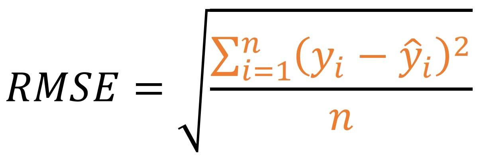

Code
library(tidyverse)
train = read_csv("data/train.csv")
test=read_csv("data/test.csv")with house price data

data download form kaggle
library(tidyverse)
train = read_csv("data/train.csv")
test=read_csv("data/test.csv")Data have 1460 record and 81 variable
glimpse(train)Rows: 1,460
Columns: 81
$ Id <dbl> 1, 2, 3, 4, 5, 6, 7, 8, 9, 10, 11, 12, 13, 14, 15, 16, 1…
$ MSSubClass <dbl> 60, 20, 60, 70, 60, 50, 20, 60, 50, 190, 20, 60, 20, 20,…
$ MSZoning <chr> "RL", "RL", "RL", "RL", "RL", "RL", "RL", "RL", "RM", "R…
$ LotFrontage <dbl> 65, 80, 68, 60, 84, 85, 75, NA, 51, 50, 70, 85, NA, 91, …
$ LotArea <dbl> 8450, 9600, 11250, 9550, 14260, 14115, 10084, 10382, 612…
$ Street <chr> "Pave", "Pave", "Pave", "Pave", "Pave", "Pave", "Pave", …
$ Alley <chr> NA, NA, NA, NA, NA, NA, NA, NA, NA, NA, NA, NA, NA, NA, …
$ LotShape <chr> "Reg", "Reg", "IR1", "IR1", "IR1", "IR1", "Reg", "IR1", …
$ LandContour <chr> "Lvl", "Lvl", "Lvl", "Lvl", "Lvl", "Lvl", "Lvl", "Lvl", …
$ Utilities <chr> "AllPub", "AllPub", "AllPub", "AllPub", "AllPub", "AllPu…
$ LotConfig <chr> "Inside", "FR2", "Inside", "Corner", "FR2", "Inside", "I…
$ LandSlope <chr> "Gtl", "Gtl", "Gtl", "Gtl", "Gtl", "Gtl", "Gtl", "Gtl", …
$ Neighborhood <chr> "CollgCr", "Veenker", "CollgCr", "Crawfor", "NoRidge", "…
$ Condition1 <chr> "Norm", "Feedr", "Norm", "Norm", "Norm", "Norm", "Norm",…
$ Condition2 <chr> "Norm", "Norm", "Norm", "Norm", "Norm", "Norm", "Norm", …
$ BldgType <chr> "1Fam", "1Fam", "1Fam", "1Fam", "1Fam", "1Fam", "1Fam", …
$ HouseStyle <chr> "2Story", "1Story", "2Story", "2Story", "2Story", "1.5Fi…
$ OverallQual <dbl> 7, 6, 7, 7, 8, 5, 8, 7, 7, 5, 5, 9, 5, 7, 6, 7, 6, 4, 5,…
$ OverallCond <dbl> 5, 8, 5, 5, 5, 5, 5, 6, 5, 6, 5, 5, 6, 5, 5, 8, 7, 5, 5,…
$ YearBuilt <dbl> 2003, 1976, 2001, 1915, 2000, 1993, 2004, 1973, 1931, 19…
$ YearRemodAdd <dbl> 2003, 1976, 2002, 1970, 2000, 1995, 2005, 1973, 1950, 19…
$ RoofStyle <chr> "Gable", "Gable", "Gable", "Gable", "Gable", "Gable", "G…
$ RoofMatl <chr> "CompShg", "CompShg", "CompShg", "CompShg", "CompShg", "…
$ Exterior1st <chr> "VinylSd", "MetalSd", "VinylSd", "Wd Sdng", "VinylSd", "…
$ Exterior2nd <chr> "VinylSd", "MetalSd", "VinylSd", "Wd Shng", "VinylSd", "…
$ MasVnrType <chr> "BrkFace", "None", "BrkFace", "None", "BrkFace", "None",…
$ MasVnrArea <dbl> 196, 0, 162, 0, 350, 0, 186, 240, 0, 0, 0, 286, 0, 306, …
$ ExterQual <chr> "Gd", "TA", "Gd", "TA", "Gd", "TA", "Gd", "TA", "TA", "T…
$ ExterCond <chr> "TA", "TA", "TA", "TA", "TA", "TA", "TA", "TA", "TA", "T…
$ Foundation <chr> "PConc", "CBlock", "PConc", "BrkTil", "PConc", "Wood", "…
$ BsmtQual <chr> "Gd", "Gd", "Gd", "TA", "Gd", "Gd", "Ex", "Gd", "TA", "T…
$ BsmtCond <chr> "TA", "TA", "TA", "Gd", "TA", "TA", "TA", "TA", "TA", "T…
$ BsmtExposure <chr> "No", "Gd", "Mn", "No", "Av", "No", "Av", "Mn", "No", "N…
$ BsmtFinType1 <chr> "GLQ", "ALQ", "GLQ", "ALQ", "GLQ", "GLQ", "GLQ", "ALQ", …
$ BsmtFinSF1 <dbl> 706, 978, 486, 216, 655, 732, 1369, 859, 0, 851, 906, 99…
$ BsmtFinType2 <chr> "Unf", "Unf", "Unf", "Unf", "Unf", "Unf", "Unf", "BLQ", …
$ BsmtFinSF2 <dbl> 0, 0, 0, 0, 0, 0, 0, 32, 0, 0, 0, 0, 0, 0, 0, 0, 0, 0, 0…
$ BsmtUnfSF <dbl> 150, 284, 434, 540, 490, 64, 317, 216, 952, 140, 134, 17…
$ TotalBsmtSF <dbl> 856, 1262, 920, 756, 1145, 796, 1686, 1107, 952, 991, 10…
$ Heating <chr> "GasA", "GasA", "GasA", "GasA", "GasA", "GasA", "GasA", …
$ HeatingQC <chr> "Ex", "Ex", "Ex", "Gd", "Ex", "Ex", "Ex", "Ex", "Gd", "E…
$ CentralAir <chr> "Y", "Y", "Y", "Y", "Y", "Y", "Y", "Y", "Y", "Y", "Y", "…
$ Electrical <chr> "SBrkr", "SBrkr", "SBrkr", "SBrkr", "SBrkr", "SBrkr", "S…
$ `1stFlrSF` <dbl> 856, 1262, 920, 961, 1145, 796, 1694, 1107, 1022, 1077, …
$ `2ndFlrSF` <dbl> 854, 0, 866, 756, 1053, 566, 0, 983, 752, 0, 0, 1142, 0,…
$ LowQualFinSF <dbl> 0, 0, 0, 0, 0, 0, 0, 0, 0, 0, 0, 0, 0, 0, 0, 0, 0, 0, 0,…
$ GrLivArea <dbl> 1710, 1262, 1786, 1717, 2198, 1362, 1694, 2090, 1774, 10…
$ BsmtFullBath <dbl> 1, 0, 1, 1, 1, 1, 1, 1, 0, 1, 1, 1, 1, 0, 1, 0, 1, 0, 1,…
$ BsmtHalfBath <dbl> 0, 1, 0, 0, 0, 0, 0, 0, 0, 0, 0, 0, 0, 0, 0, 0, 0, 0, 0,…
$ FullBath <dbl> 2, 2, 2, 1, 2, 1, 2, 2, 2, 1, 1, 3, 1, 2, 1, 1, 1, 2, 1,…
$ HalfBath <dbl> 1, 0, 1, 0, 1, 1, 0, 1, 0, 0, 0, 0, 0, 0, 1, 0, 0, 0, 1,…
$ BedroomAbvGr <dbl> 3, 3, 3, 3, 4, 1, 3, 3, 2, 2, 3, 4, 2, 3, 2, 2, 2, 2, 3,…
$ KitchenAbvGr <dbl> 1, 1, 1, 1, 1, 1, 1, 1, 2, 2, 1, 1, 1, 1, 1, 1, 1, 2, 1,…
$ KitchenQual <chr> "Gd", "TA", "Gd", "Gd", "Gd", "TA", "Gd", "TA", "TA", "T…
$ TotRmsAbvGrd <dbl> 8, 6, 6, 7, 9, 5, 7, 7, 8, 5, 5, 11, 4, 7, 5, 5, 5, 6, 6…
$ Functional <chr> "Typ", "Typ", "Typ", "Typ", "Typ", "Typ", "Typ", "Typ", …
$ Fireplaces <dbl> 0, 1, 1, 1, 1, 0, 1, 2, 2, 2, 0, 2, 0, 1, 1, 0, 1, 0, 0,…
$ FireplaceQu <chr> NA, "TA", "TA", "Gd", "TA", NA, "Gd", "TA", "TA", "TA", …
$ GarageType <chr> "Attchd", "Attchd", "Attchd", "Detchd", "Attchd", "Attch…
$ GarageYrBlt <dbl> 2003, 1976, 2001, 1998, 2000, 1993, 2004, 1973, 1931, 19…
$ GarageFinish <chr> "RFn", "RFn", "RFn", "Unf", "RFn", "Unf", "RFn", "RFn", …
$ GarageCars <dbl> 2, 2, 2, 3, 3, 2, 2, 2, 2, 1, 1, 3, 1, 3, 1, 2, 2, 2, 2,…
$ GarageArea <dbl> 548, 460, 608, 642, 836, 480, 636, 484, 468, 205, 384, 7…
$ GarageQual <chr> "TA", "TA", "TA", "TA", "TA", "TA", "TA", "TA", "Fa", "G…
$ GarageCond <chr> "TA", "TA", "TA", "TA", "TA", "TA", "TA", "TA", "TA", "T…
$ PavedDrive <chr> "Y", "Y", "Y", "Y", "Y", "Y", "Y", "Y", "Y", "Y", "Y", "…
$ WoodDeckSF <dbl> 0, 298, 0, 0, 192, 40, 255, 235, 90, 0, 0, 147, 140, 160…
$ OpenPorchSF <dbl> 61, 0, 42, 35, 84, 30, 57, 204, 0, 4, 0, 21, 0, 33, 213,…
$ EnclosedPorch <dbl> 0, 0, 0, 272, 0, 0, 0, 228, 205, 0, 0, 0, 0, 0, 176, 0, …
$ `3SsnPorch` <dbl> 0, 0, 0, 0, 0, 320, 0, 0, 0, 0, 0, 0, 0, 0, 0, 0, 0, 0, …
$ ScreenPorch <dbl> 0, 0, 0, 0, 0, 0, 0, 0, 0, 0, 0, 0, 176, 0, 0, 0, 0, 0, …
$ PoolArea <dbl> 0, 0, 0, 0, 0, 0, 0, 0, 0, 0, 0, 0, 0, 0, 0, 0, 0, 0, 0,…
$ PoolQC <chr> NA, NA, NA, NA, NA, NA, NA, NA, NA, NA, NA, NA, NA, NA, …
$ Fence <chr> NA, NA, NA, NA, NA, "MnPrv", NA, NA, NA, NA, NA, NA, NA,…
$ MiscFeature <chr> NA, NA, NA, NA, NA, "Shed", NA, "Shed", NA, NA, NA, NA, …
$ MiscVal <dbl> 0, 0, 0, 0, 0, 700, 0, 350, 0, 0, 0, 0, 0, 0, 0, 0, 700,…
$ MoSold <dbl> 2, 5, 9, 2, 12, 10, 8, 11, 4, 1, 2, 7, 9, 8, 5, 7, 3, 10…
$ YrSold <dbl> 2008, 2007, 2008, 2006, 2008, 2009, 2007, 2009, 2008, 20…
$ SaleType <chr> "WD", "WD", "WD", "WD", "WD", "WD", "WD", "WD", "WD", "W…
$ SaleCondition <chr> "Normal", "Normal", "Normal", "Abnorml", "Normal", "Norm…
$ SalePrice <dbl> 208500, 181500, 223500, 140000, 250000, 143000, 307000, …options(scipen = 999)
ggplot(train, aes(SalePrice)) +
geom_histogram()
The MAE measures the average magnitude of the errors in a set of forecasts, without considering their direction. It measures accuracy for continuous variables. The equation is given in the library references. Expressed in words, the MAE is the average over the verification sample of the absolute values of the differences between forecast and the corresponding observation. The MAE is a linear score which means that all the individual differences are weighted equally in the average.

The RMSE is a quadratic scoring rule which measures the average magnitude of the error. The equation for the RMSE is given in both of the references. Expressing the formula in words, the difference between forecast and corresponding observed values are each squared and then averaged over the sample. Finally, the square root of the average is taken. Since the errors are squared before they are averaged, the RMSE gives a relatively high weight to large errors. This means the RMSE is most useful when large errors are particularly undesirable.
Both the MAE and RMSE can range from 0 to ∞. They are negatively-oriented scores: Lower values are better.